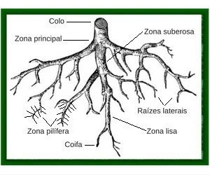
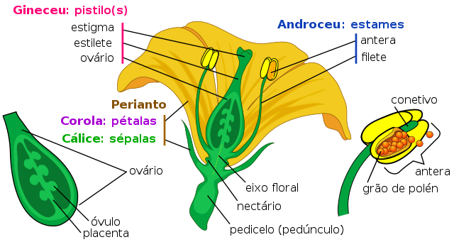
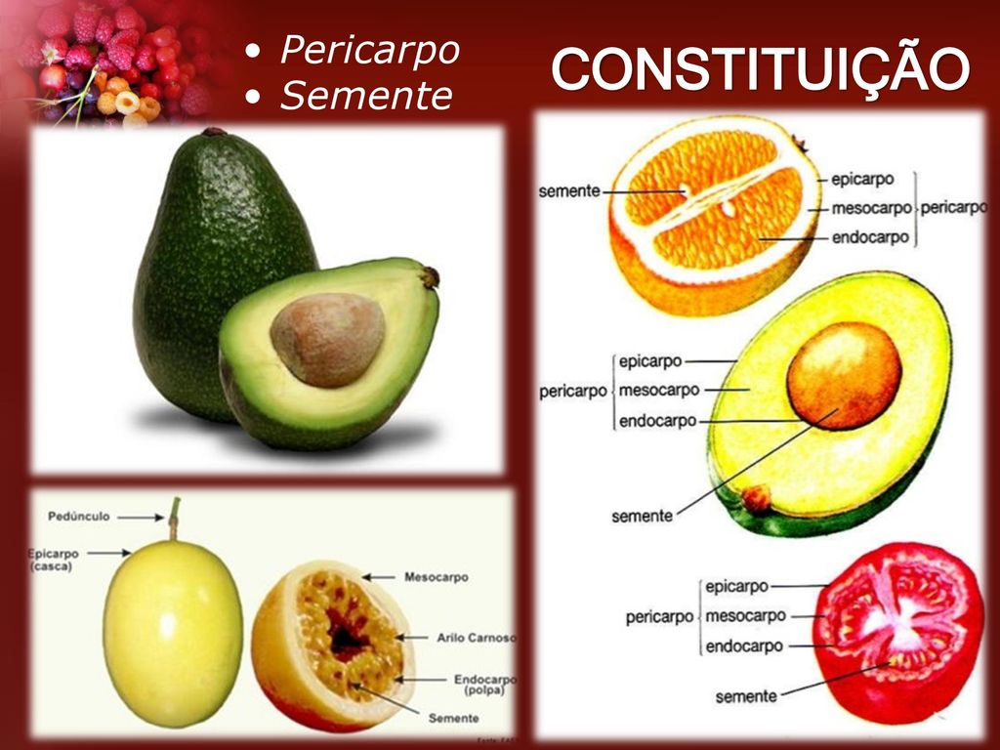

Grupo: LUAN GIBSON, MICAEL SOARES, ADRIANO CAMILO, RAFAEL YU, CARLOS BISPO
Turma: INF241
O que é Morfologia das Plantas?
A morfologia das plantas é um ramo da ciência que procura estudar cada uma das partes das plantas, entendendo suas funcionalidades e estruturas. Neste site proporcionarmos uma visão geral. Assim, não abordaremos os tipos e microestruturas que compõem cada parte.
Ainda assim, daremos uma noção das funções de cada parte e particularidades a respeito de alguns destes fantásticos seres vivos.
Principais partes das plantas
As plantas são constituídas basicamente pelas seguintes partes:
- Raiz
- Caule
- Folha
- Semente
- Flor
- Fruto
Estas podem ser divididas em dois principais grupos: Estruturas vegetativas e Estruturas reprodutivas.
Raízes
Geralmente são estruturas subterrâneas, que tem função de absorver sais minerais e água necessárias para o metabolismo da planta e também é responsável por fixar a planta em determinado substrato ou solo. As raízes são compostas de algumas estruturas que têm funções particulares, elas são:
- Zona de ramificação: Corresponde ao local partem as raízes secundárias que aumentam a fixação e a absorção.
- Zona pilífera: Apresenta pêlos absorventes que captam água e sais minerais que posteriormente formarão em seiva bruta.
- Zona de alongamento: Local onde ocorre o alongamento das células produzidas pela coifa.
- Coifa: É uma espécie de capuz que protege as células meristemáticas, que são responsáveis pelo crescimento. A coifa também ajuda a raiz a penetrar no solo.
![[Foto de uma raiz]](img/raiz.jpg)
Um emaranhado de raízes são chamados de sistemas radiculares e estes possuem dois principais tipos:
- Pivotante: Possui uma raiz principal que dela partiram as outras raízes.
- Fasciculada: Não possui raiz principal
Existem também diversos tipos, quanto adaptações particulares que sofreram durante a evolução(devido às condições que se desenvolveram), elas são as raízes:
- Tuberosas: São raízes subterrâneas que armazenam nutrientes.
- Tabulares: Dão maior estabilidade para a planta e tem suas suas raízes achatadas(como tábuas) e para fora do solo.
- Suporte(ou Escora): Ajudam na sustentação da planta e normalmente crescem são plantas de solo de manguezais.
- Respiratórios ou Aéreas: Como indica o nome, crescem para fora da terra assim como
- Sugadoras: Em suma, são plantas que parasitam outras plantas, penetrando seus caules e sugando sua seiva.
- Aquáticas: São características das plantas que vivem na água. Estas raízes normalmente são finas e longas e possuem coifa bem desenvolvida.

Curiosidade
A internet vegetal
A partir de diversos estudos foi descoberto que as plantas se comunicam entre si através de suas raízes conectadas a uma vasta rede de fungos. Podendo enviar sinais de alerta e muito mais, como mostra o vídeo da BBC News:
Caules
Os caules são normalmente as estruturas que sustentam a planta e também são responsáveis por estabelecer a comunicação entre raízes e folhas. A condução da seiva se dá por meio do xilema e do floema que são vasos condutores da planta.
Os caules normalmente são formados por nós, onde são produzidas uma ou mais folhas e onde são encontradas as gemas, que originam ramos, folhas e flores.
Existem diversos tipos de caules: aéreos, subterrâneos, troncos, estipes, etc
Os caules podem ser classificados em 3 grupos principais, que são:
- Caules Aquáticos: Caules presentes em ambientes aquáticos, seja completamente submersos ou flutuando sobre a água.
- Caules Aéreos: São os caules que ficam expostos, crescendo acima do solo. Seus formatos variam muito (hastes, troncos, estipes, colmos, caules rastejantes ou caules volúveis).
- Caules subterrâneos: Eles normalmente não ficam tão expostos já que ficam localizados abaixo do solo. Tais plantas normalmente produzem ramos aéreos ou folhas.
Curiosidade
Até as maiores árvores do mundo têm um limite de crescimento. Por quê?
A energia do tubérculo
Existem vários tipos de caules e entre eles, existem os subterrâneos que são aqueles que atuam como um órgão de reserva de energia. Um ótimo e comum exemplo, são as batatas. É possível demonstrar sua função a partir da reação que a batata tem com o zinco e cobre. Foi descoberto que a batata é capaz de gerar energia suficiente para manter uma lâmpada funcionando por até 40 dias.
https://www.foxlux.com.br/blog/foxlux-2/comida-que-ilumina-batatas-como-fonte-de-geracao-de-energia-eletrica/
Folhas
É a principal parte das plantas. Ela é responsável pelo processo de fotossíntese, que produz o alimento da planta. As folhas são compostas por algumas estruturas, elas são:
- Limbo
- Nervuras
- Pecíolo
- Bainha
Tais partes das folhas apresentam cada uma uma função. Sendo que o limbo é o local onde se dá a maior parte do processo da fotossíntese, já as nervuras são extensões do vaso condutores que levam seiva bruta ou seiva elaborada para as plantas. Enquanto o pecíolo tem a função de sustentar a folha e a prende ao caule, e a bainha é uma extensão da folha que se liga diretamente ao caule(sendo que às vezes pode recobrir o pecíolo).
![[Foto de uma folha ou mais de uma sla]](https://th.bing.com/th/id/R.7180d72a26f35477032782d753d249f0?rik=lSVXmEJin9v8AA&riu=http%3a%2f%2fwallpapers.net%2fweb%2fwallpapers%2fgreen-leaves-hd-wallpaper%2f5120x2160.jpg&ehk=NaEPORG7H8sqKddhfKFAn1Ed3ifowGSNmhQl0l1y9Rk%3d&risl=&pid=ImgRaw&r=0)
Com o decorrer do tempo as folhas foram se adaptando decorrente das condições em que viviam, e assim foram acumulando algumas características especiais. Assim podemos dividi-las a partir de suas modificações:
- Gavinhas: Folhas que se enrolam em outras estruturas para poder ter melhor suporte.
- Folhas de plantas carnívoras: São folhas que se adaptaram para capturar pequenos animais e digeri-los, permitindo que a planta absorva seus minerais.
- Espinhos: É uma adaptação que evita a perda excessiva de água e protege a planta de espécies herbívoras. Tal adaptação é comum para plantas de terrenos áridos.
- Brácteas: São folhas adaptadas, encontradas na base do pecíolo, que ajudam a atrair polinizadores. Tais folhas podem ser coloridas.
Curiosidade
Plantas carnívoras
As plantas carnívoras possuem um dos tipos de folhas mais interessantes. Diferentemente das outras plantas, suas folhas agem como uma armadilha mortal para insetos. Os insetos capturados são digeridos e utilizados como fonte de nutrientes, assim conseguem viver em regiões com solos pobres em nutrientes. No vídeo abaixo podemos visualisar alguns exemplares e seus, incríveis, métodos utilizados para captura de insetos:
Sementes
As sementes corresponde ao ávulo maduro e fecundado da palnta. Elas são as estruturas responsáveis por dar a vida a uma nova planta. Ela é constituida normalmente pelas seguintes estruturas:
(Cada destas têm funções adicionais )
- Casca (em vezes, é ausente)
- Embrião
- Endoesperma
Quanto as funções destas:
A casca é a responsável pela proteção do embrião. Endoesperma é o tecido que acumula nutrientes/substâncias que alimentarão a planta até que ela seja capaz de realizar a fotossíntese. Já o embrião é o novo indivíduo que é resultante da fecundação.
As sementes podem ser divididas em dois grupos, que são classificados a partir da quantidade de cotilédones que é a primeira folha de um embrião ou cada uma das primeiras folhas do embrião, sendo que tais folhas são associados no processo de nutrição do embrião.Os dois tipos são:
- Monocotiledôneas: Possuem um cotilédone
- Dicotiledôneas: Possuem dois cotilédones
Curiosidades
Você sabia que a partir de uma simples classificação podemos traçar várias características de uma planta? Isto ocorre na classificação das por cotilédones, que definem diversas características morfológicas externas como mostra o vídeo:
Flores
São os órgãos reprodutivos das angiospermas. São nas flores que ocorre a vegetação e polinização, além de ser a parte que dará origem ao fruto. Para ocorrer o processo de fecundação foram criadas diversas estratégias para dispersar o pólen, utilizando animais, o vento, água, etc.
![[Foto de uma flor]](https://th.bing.com/th/id/R.ca86d22d751cb32f7d475bb745dc34e7?rik=0FzL41XsUKLvGg&riu=http%3a%2f%2fyesofcorsa.com%2fwp-content%2fuploads%2f2017%2f08%2f4K-Yellow-Flowers-Photo-Download.jpg&ehk=GSP3UJLIg4qzXX5IdZI%2bETpVSsXSNYAp9e6obAH3y20%3d&risl=&pid=ImgRaw&r=0)
As flores são compostas por 3 principais partes que tem suas subdivisões, elas são:
- Pedúnculo floral: é o eixo de sustentação da flor, que liga a flor ao caule
- Receptáculo floral: è a parte dilatada do pedúnculo onde ocorre a inserção dos elementos florais e serve de suporte para os verticilos florais.
- Verticilos florais
- Cálice: Conjunto de sépalas , que tem função de proteger a flor
- Corola: Conjunto de pétalas, tem função de atrair polinizadores
- Androceu: Corresponde a parte masculina da flor, constituído por filete e antera.
- Gineceu: Corresponde a parte feminina da flor, constituído por estigma, estilete e ovário.

Curiosidade
A sedução das orquídeas
Como já explicado, as plantas desenvolveram inovadores métodos para atrair insetos,neste caso, as flores usam deste mecanismo para polinização que contribuirá para o processo de fecundação. As orquídeas desenvolveram um dos mais interessantes métodos de atração, que pode ser muito bem visto no vídeo:
Frutos
É o resultado do desenvolvimento do ovário da flor, após a fecundação. Ele tem como principal função a proteção das sementes. A dispersão das sementes ocorre por meio da água, vento e animais. Tal ação tem como objetivo aumentar ainda mais o alcance da espécie e evitar a competição entre plantas, por luz ou água.
As funções do fruto são:
- Proteção da semente em desenvolvimento;
- Em alguns casos, auxilia na dispersão da semente;
- Promove a propagação e perpetuação da espécie.
A estrutura do fruto pode ser dividida em pericarpo e sementes tomando como exemplo os frutos carnosos.
O pericarpo pode ser seccionado em suas outras partes. Estas partes são:
Epicarpo, que corresponde a casca do fruto,
Mesocarpo, se refere à parte suculenta do fruto,
Endocarpo que é a membrana que engloba a semente.
Na natureza existem 3 tipos de frutos, eles são:
- Frutos carnosos: Apresentam pericarpo suculento.
Ex.: pêssego - Frutos secos: Apresentam pericarpo seco.
Ex.: Soja - Pseudofrutos= São conhecidos por frutos falsos pois não se originam do ovário das plantas. Normalmente são suculentos e doces.
Ex.:Banana
Classificação dos Frutos
Quanto ao desenvolvimento do ovário, os frutos são classificados em simples, agregados e múltiplos.
Frutos Simples: são originários de um só ovário e de uma única flor. Exemplos: tomate e cereja. Podem ser do tipo seco ou carnoso.
Frutos Secos: são os que possuem pericarpo pobre em água. As substâncias nutritivas concentram-se na semente. Exemplo: castanha.
Frutos Carnosos: possuem pericarpo rico em água e substâncias nutritivas. Exemplos: goiaba, mamão, abacate.
Frutos Agregados: se originam de uma flor com muitos ovários separados. Exemplo: magnólia.
Frutos Múltiplos ou Infrutescência: se desenvolvem de inflorescências, nas quais os muitos ovários fundem-se e formam uma estrutura única. Exemplos: Figo, abacaxi e amora.
Quanto ao Número de Sementes:
- Frutos Monospérmicos: são os que apresentam uma única semente.
Exemplo: abacate. - Frutos Polispérmicos: são os que possuem mais de uma semente.
Exemplo: laranja.
